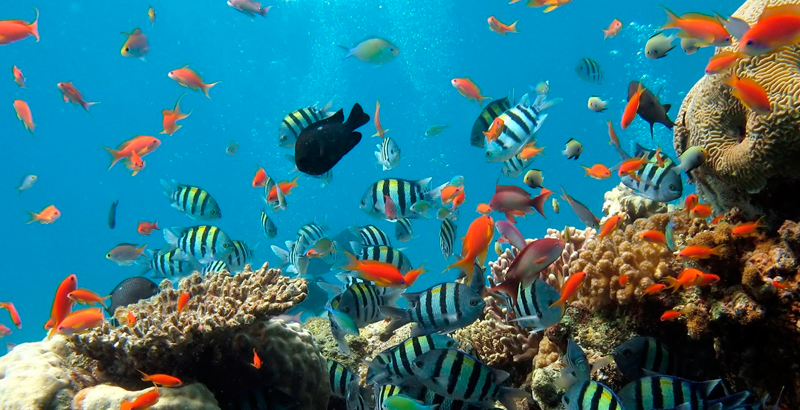

Explora los diferentes ecosistemas de nuestro planeta
Introducción a los Ecosistemas
Un ecosistema es una comunidad de organismos vivos que interactúan con su entorno. Los ecosistemas pueden ser terrestres, acuáticos o una mezcla de ambos.
En este portal exploraremos diferentes tipos de ecosistemas, sus características y la biodiversidad que albergan.
los ecosistemas son sistemas abiertos y dinámicos, donde los factores bióticos y abióticos influyen entre sí de manera constante.
El equilibrio de un ecosistema puede verse afectado por variaciones en cualquiera de sus componentes, desde el cambio climático y la contaminación
hasta la introducción o extinción de especies. Este equilibrio, conocido como homeostasis ecológica, permite que el ecosistema mantenga una cierta
estabilidad a lo largo del tiempo. Sin embargo, cuando las alteraciones son muy grandes o rápidas, el ecosistema puede cambiar restrictivamente,
transformando sus características e incluso su composición de especies.
En un ecosistema, cada componente cumple un papel importante que ayuda a mantener el equilibrio del sistema en:
Las plantas (productores) utilizan la luz solar para hacer fotosíntesis.
Los animales herbívoros (consumidores primarios) se alimentan de plantas. Los herbívoros pueden comer diferentes partes
de las plantas, como las raíces, tallos, hojas, flores, frutos o semillas.
Los carnívoros (consumidores secundarios) se alimentan de consumidores primarios, que son los animales que comen plantas
Los descomponedores (como hongos y bacterias) Los descomponedores son organismos que se alimentan de materia orgánica muerta y
la transforman en compuestos inorgánicos, devolviendo nutrientes al ecosistema. Los descomponedores son parte importante de los
ecosistemas y se les conoce también como detritívoros, saprófagos o detritófagos.
Ecosistemas de Bosques
Los bosques son ecosistemas terrestres dominados por árboles. Existen diferentes tipos de bosques como el tropical, templado y boreal.
Un ecosistema de bosque es un paisaje dominado por árboles, donde interactúan plantas, animales, microbios, suelo y clima. En estos ecosistemas,
la cobertura de copa de los árboles supera el 10% de la superficie en condiciones áridas o semiáridas, y el 25% en condiciones más favorables.
Los bosques son ecosistemas muy diversos que albergan la mayoría de las especies de plantas y animales terrestres. Son vitales para la vida cotidiana
y la economía, ya que proporcionan recursos como madera, alimentos, medicinas, y combustibles. Además, ofrecen servicios ambientales como la captura
de carbono, la regulación del clima, y el mantenimiento de las fuentes de agua.
Existen diferentes tipos de bosques, entre ellos: Tropical, Subtropical, Templado, Boreal.
El Amazonas en Brasil.
La Selva Negra en Alemania.
La Taiga Siberiana en Rusia.
La Selva del Congo en la República Democrática del Congo.
Los bosques boreales de Canadá.
Los bosques de secuoyas en Estados Unidos
Ecosistemas de Desiertos
Los ecosistemas desérticos son biomas áridos que se caracterizan por tener un clima seco, temperaturas extremas y suelos áridos. En ellos, la cantidad de lluvia que reciben es menor
a la que pierden por evaporación, por lo que la humedad es baja.
Los desiertos son ecosistemas diversos que se encuentran en los siete continentes y que se pueden clasificar en dos tipos: desiertos cálidos y desiertos fríos:
Desiertos cálidos:
Como el Sahara, tienen temperaturas altas, suelos arenosos, pedregosos o rocosos, y son muy propensos a la erosión eólica y la radiación solar.
Desiertos fríos
Como el de Atacama, en América del Sur, tienen temperaturas por debajo de los 0 °C, un clima seco y poca flora y fauna.
Los desiertos son importantes porque:
Fijan el dióxido de carbono, ayudando a contrarrestar los efectos del cambio climático.
Son un ejemplo de la capacidad de adaptación de las especies que sobreviven en condiciones de escasez de agua y aridez.
Garantizan el equilibrio ecológico entre los diferentes ecosistemas.
Algunos de los desiertos más espectaculares del mundo son:
Desierto del Sáhara.
Desierto de Gobi.
Desierto de Arabia.
La Antártida y el desierto Ártico.
Desierto de la Patagonia Oriental.
Desiertos australianos.
Desierto de Chihuahua.
Los desiertos son ecosistemas caracterizados por bajas precipitaciones y condiciones extremas. Las temperaturas varían entre calor extremo durante el día y frío durante la noche.
Clima: Muy seco.
Flora: Plantas adaptadas como cactus y arbustos.
Fauna: Animales como camellos, zorros del desierto y reptiles.
Ecosistemas de Océanos
Los ecosistemas de los océanos son sistemas dinámicos que se caracterizan por la comunidad de organismos que viven en ellos y los factores ambientales que los rodean.
Los principales tipos de ecosistemas marinos son: Costeros, de aguas abiertas, de aguas profundas, de arrecifes de coral. Los ecosistemas marinos son los ecosistemas
acuáticos más grandes de la Tierra y se distinguen por existir en aguas con un alto contenido de sal. Estos sistemas contrastan con los ecosistemas de agua dulce,
que en cambio, tienen menores contenidos de sal.
Algunos ejemplos de ecosistemas marinos son:
Marismas.
Manglares.
Zonas intermareales.
Estuarios.
Lagunas costeras.
Fondo marino.
Mar profundo.
Los océanos cubren la mayor parte del planeta y albergan una gran variedad de vida marina. Tienen varios niveles de profundidad, cada uno con sus características.
Clima: Varía según la región.
Flora: Algas, corales.
Fauna: Peces, tiburones, delfines, ballenas.

Ecosistemas de Humedales
Este ecosistema recibe muchos nombres: ciénagas, pantanos, bayous, marismas, billabongs, turberas, estanques vernales, lagunas y otros campos y bosques anegados.
Si hay agua, dulce o salada, sobre el suelo o justo debajo de él, se trata de un humedal. Los humedales son ecosistemas que se caracterizan por ser zonas de transición
entre los ecosistemas terrestres y los acuáticos, y por estar inundadas de forma temporal o permanente. Se forman en áreas bajas con drenaje pobre, y el agua que los llena
proviene de la lluvia, aguas subterráneas o ambas.
Los humedales son importantes para la vida en la Tierra porque:
Son fuente de agua para consumo humano, producción y vida silvestre.
Son un hábitat para muchas especies de flora y fauna.
Ayudan a controlar las inundaciones.
Mitigan el calentamiento global.
Son una fuente de alimentos, medicinas y materiales.
Protegen las costas y evitan la erosión.
Son un lugar de recreación y turismo.
Los humedales son áreas donde el agua cubre el suelo de manera parcial o permanente. Son zonas de gran biodiversidad.
Clima: Varía ampliamente.
Flora: Plantas acuáticas, manglares.
Fauna: Aves acuáticas, peces, anfibios.
Ecosistemas de Tundra
Los ecosistemas de la tundra son regiones sin árboles que se encuentran en el Ártico y en las cimas de las montañas, donde el clima es frío y ventoso,
y las precipitaciones son escasas. Las tierras de la tundra están cubiertas de nieve durante gran parte del año, pero el verano trae consigo brotes
de flores silvestres. La tundra es un bioma que se caracteriza por presentar un subsuelo helado, escasas precipitaciones y un terreno llano con falta
de vegetación de árboles. El término tundra proviene del ruso y quiere decir “llanura sin árboles”.
Es el bioma más frío del planeta, por lo que suele encontrarse en zonas cercanas a los polos, y tiene un paisaje característico y distintivo formado por
una capa de nieve que cubre tanto el suelo como los montes.
La tundra es un ecosistema de clima frío y suelo helado. La vegetación es baja y los animales están adaptados a temperaturas extremas.